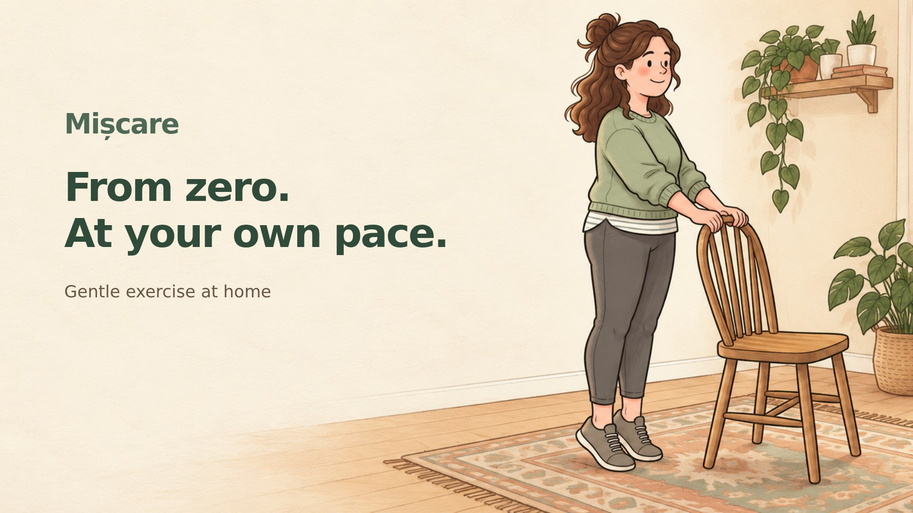
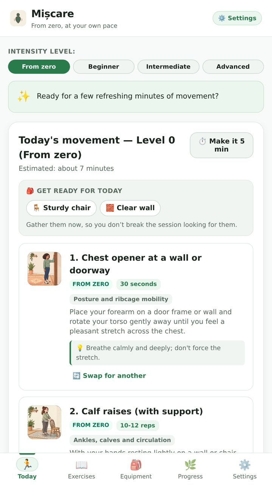
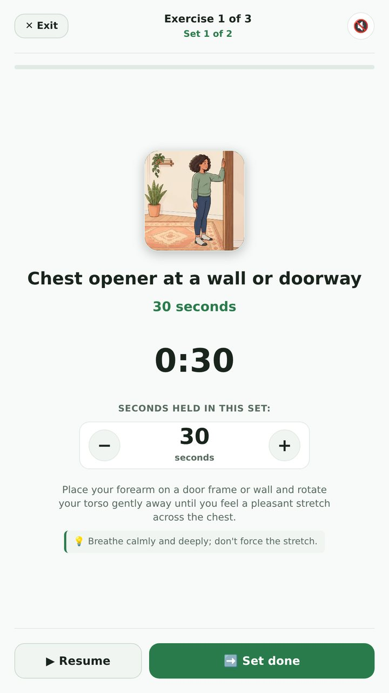
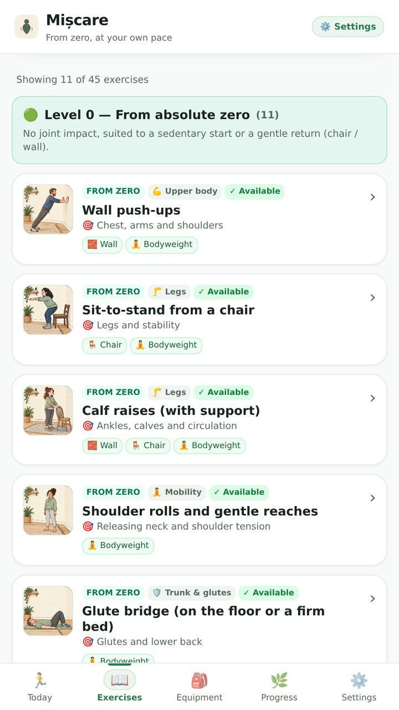
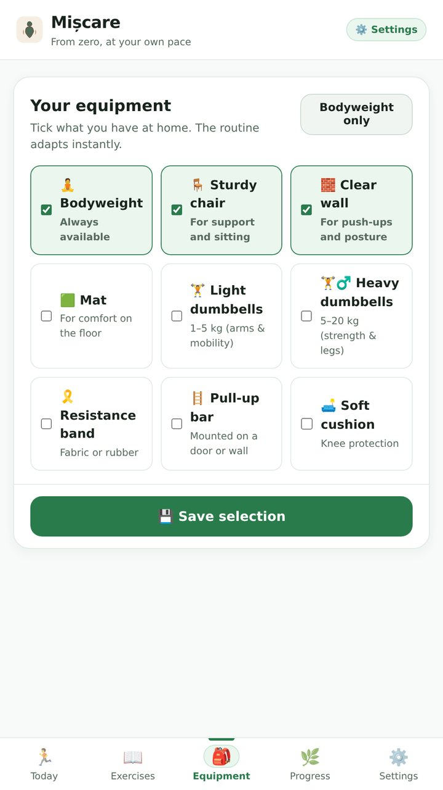
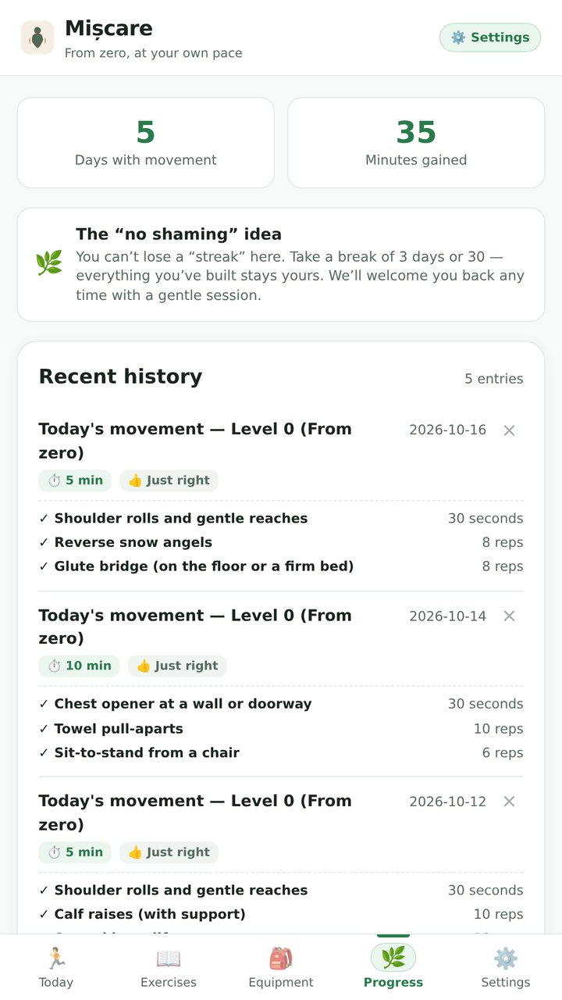
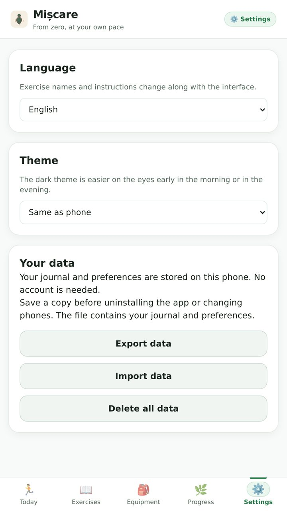

أدوات يومية
Pocket Omaha
افهم ما تغيّر في الشركات التي تتابعها. وراجع أسبابك.
أضف بعض الحركة إلى يومك باستخدام المعدات التي لديك بالفعل.

Mișcare متاح على Google Play لنظام Android 7.0 أو أحدث، وهو في مرحلة الإنتاج منذ الإصدار 0.1.1 (3 نوفمبر 2026). يضم روتينات موجّهة و45 تمرينًا مصوّرًا و12 لغة للواجهة ومظهرًا فاتحًا أو داكنًا وسجل تمارين محليًا مع نسخ احتياطي بصيغة JSON. لا يحتاج إلى حساب أو خادم أو إذن بالوصول إلى الإنترنت.
يعرض الإصدار 0.1.1 كل شاشة باللغة التي تختارها، ويحسب تمارين الثبات بالثواني بدلًا من التكرارات، ويُبقي «من الصفر» مناسبًا لمستواك حتى بوزن الجسم فقط. كما يضيف مظهرًا داكنًا، وأصبح الوقت التقديري يتبع عدد المجموعات الذي تختاره.
إذا فضّلت التثبيت يدويًا، فنزّل ملف APK الموقّع من GitHub Releases. يحمل توقيعًا مختلفًا عن نسخة Play، لذا لا يمكن لأيٍّ منهما تحديث الأخرى: صدّر بياناتك قبل الانتقال. لا يستورد تطبيق Android سجل PWA، ويستبدل الاستيراد بصيغة JSON الملف الشخصي والسجل الحاليين. راجع دليل التثبيت والنسخ الاحتياطي لمعرفة المجاميع الاختبارية والتوقيع والفحوصات المتبقية. التذكيرات غير متوفرة.
ابدأ من الصفر. تحرك بالسرعة التي تناسبك. لا ذنب، مجرد تعديل.
Mișcare تطبيق تمارين تكيّفي، له تطبيق Android على Google Play وإصدار ويب تستضيفه بنفسك. صُمّم للمبتدئين ولمن يعودون بعد انقطاع، مع روتينات قصيرة واختيار للمعدات وسجل للتمارين. التقدّم اختيار، وأيام الراحة لا تكسر أي سلسلة.
عند فتح التطبيق، يتم الترحيب بالمستخدمين مباشرة من خلال "جلسة اليوم" - وهي جاهزة للبدء بنقرة واحدة. إذا أصبحت الحياة مزدحمة، فإن خيار "اجعلها 5 دقائق" بنقرة واحدة يؤدي إلى تقصير فترة التمرين. إذا كانت الحياة تعترض طريقك لعدة أيام، فلن تكون هناك خطوط مكسورة أو رسائل ذنب؛ يرحب بك التطبيق ببساطة من خلال روتين إعادة الدخول اللطيف.
يستخدم تطبيق PWA الذي تستضيفه بنفسك Vanilla JavaScript وNode.js وSQLite، مع تحديثات pwa-kit ودعوات الأجهزة عبر pwa-invite-console. أما تطبيق Android فيحزم الواجهة والمحرك التكيّفي في Capacitor، ويحفظ الملف الشخصي والسجل محليًا في IndexedDB، ويتحدّث عبر Google Play أو بتثبيت ملف APK موقّع أحدث.






pwa-kit للتخزين المؤقت لعامل الخدمة على الشبكة أولاً مع ختم إصدار تجزئة المحتوى ومطالبات التحديث غير المزعجة.pwa-invite-console رموز الاقتران (XXXX-YYYY-ZZZZ) إصدار رموز مميزة آمنة وطويلة الأمد لجلسة الجهاز.Vanilla JavaScript (وحدات ES) بدون عبء خطوة البناء، وخصائص CSS المخصصة سريعة الاستجابة، وتوليف صوت الويب المخصص، والتخزين المؤقت لعامل الخدمة دون اتصال بالإنترنت.
يستخدم تطبيق PWA نظام Node.js 24 والوحدة المدمجة node:sqliteوواجهات REST باستخدام Express. يشغّل إصدار Android محرك التمارين المشترك محليًا ولا يحتاج إلى خادم خلفي.
توافق العقد الأصلي مع pwa-kit لإدارة دورة حياة الإصدار ووحدة التحكم pwa-invite-لاسترداد رمز الدعوة وإدارة الجهاز.
Mișcareسياسة الخصوصية (بالإنجليزية)شروط الخدمة (بالإنجليزية)